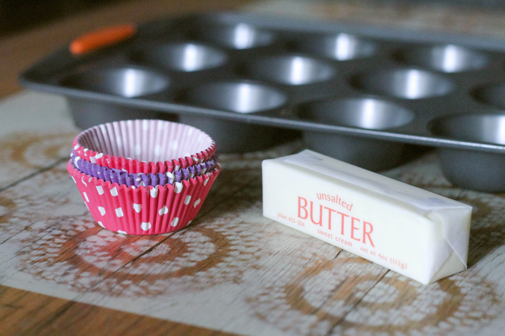
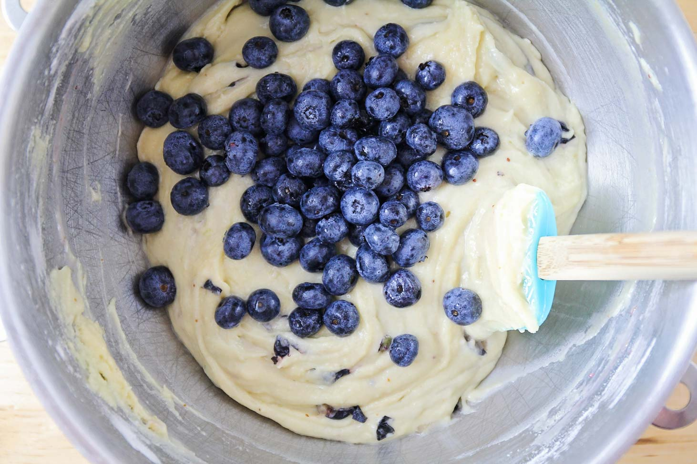
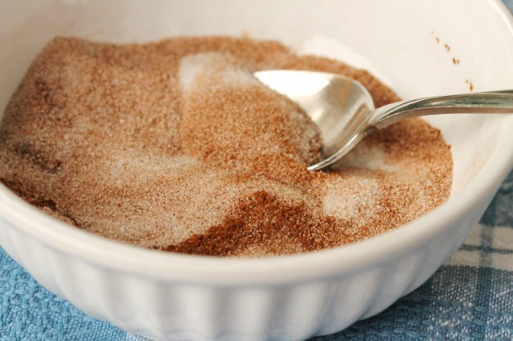
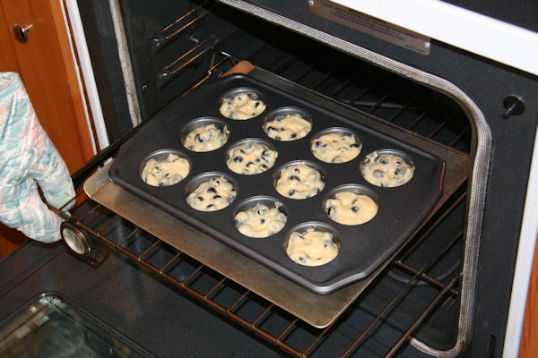

Subtly sweet but full of fruity flavor, blueberry muffins are a total crowd pleaser and can make a great snack anytime of day. This recipe is quick, easy, and most important, delicious!
40 min
25 min
15 min
8 muffins
Preheat oven to 400 degrees F (200 degrees C). Grease muffin tin or place paper muffin sleeves in tin.
Combine flour, sugar, salt, baking powder. Place vegetable oil into a 1 cup measuring cup; add the egg and enough milk to fill the cup. Mix this with flour mixture. Fold in blueberries. Fill muffin cups right to the top, and sprinkle with crumb topping mixture.
To Make Crumb Topping: Mix together 1/2 cup sugar, 1/3 cup flour, 1/4 cup butter, and 1 1/2 teaspoons cinnamon. Mix with fork, and sprinkle over muffins before baking.
Bake for 20 to 25 minutes in the preheated oven, or until done.
*all info is per muffin*
Calories: 383
Total fat: 16.1 g
Protein: 4.3 g
Cholesterol: 39 mg
Sodium: 322 mg
© Copyright 2019, Alison Gold